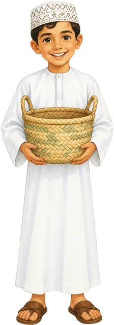
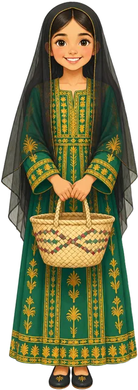
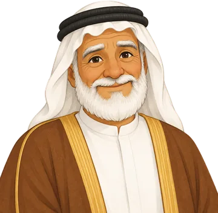

🎵
🦪
0
❤️❤️❤️
⏸️
▶
◀
🧬 وراثية
📚 مكتسبة
رحلة الدانة
رحلة علمية في جسم الإنسان 🧬 من الفريج إلى أعماق البحر
ابدأ الرحلة
العلوم — الصف الرابع — الفصل الأول: تركيب جسم الإنسان
اختر شخصيتك

بحّار الفريج

بنت الفريج
هيا بنا!
🗺️ خريطة الرحلة
🔑 للمعلمة: فتح جميع المراحل
تغيير الشخصية أو الاسم

النوخذة بو سالم
التالي ⬅
يشهد النوخذة بو سالم أنّ البحّار
🦪 لؤلؤ هذه المرحلة:
🗺️ خريطة الرحلة
🔁 العب المرحلة مرة أخرى
النوخذة بو سالم